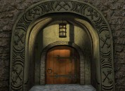
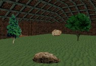
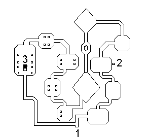

| The Monolith | |
| 1. | Entrance |
| 2. | Secret room. 5000 Gold in the little tree. |
| 3. | The main chamber. There is a letter in here that someone might want, and you have to deface the alter for the Quest Eleanor Vanderbilt. |
This one is quite easy, there are no puzzles to it, an onlt the one hidden room which you would probably find anyway.
There are monsters from all the elemental magics except fire.
Leave us a messagemgrounds@hotmail.com